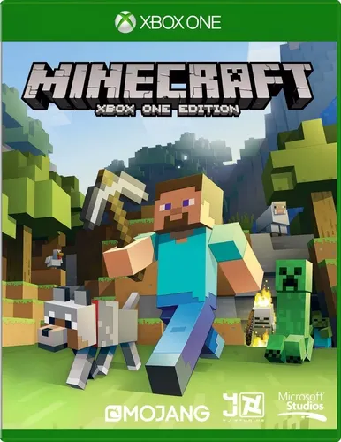

Comprar
Call of Duty Modern Warfare: es un videojuego de guerra y no pretende ser nada más. La mencionada similitud con un simulador se limita al diseño, los gráficos y el conjunto que enmarca el gunplay. Pero la jugabilidad se mantiene fiel a las raices: es rápida y - sobre todo - muy divertida.

Comprar
Elden Ring: es un juego de rol de acción en tercera persona desarrollado por FromSoftware y publicado por Bandai Namco Entertainment para Microsoft Windows, PlayStation 4, PlayStation 5 y Xbox One. El videojuego surge de una colaboración entre el director y diseñador Hidetaka Miyazaki y el novelista de fantasía George R. R. Martin.
Comprar
Minecraft: es un videojuego de mundo abierto donde la exploración y las construcciones son fundamentales. Creado por Markus "Notch" Persson, nos permite desarrollar nuestros propios universos fantásticos y artísticos, mediante la colocación y destrucción de bloques. Al ser un videojuego de mundo abierto, no tiene una misión concreta (salvo alguno de sus modos de juego) y consiste en la construcción libre mediante el uso de cubos con texturas tridimensionales. Los bloques representan distintos elementos de la naturaleza y el jugador puede desplazarse por su entorno y modificarlo mediante la creación, recolección y transporte de esos bloques.